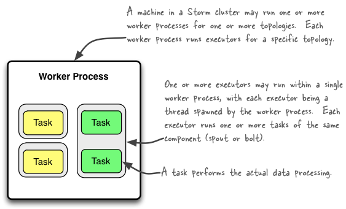

Storm distinguishes between the following three main entities that are used to actually run a topology in a Storm cluster:
Here is a simple illustration of their relationships:

A worker process executes a subset of a topology. A worker process belongs to a specific topology and may run one or more executors for one or more components (spouts or bolts) of this topology. A running topology consists of many such processes running on many machines within a Storm cluster.
An executor is a thread that is spawned by a worker process. It may run one or more tasks for the same component (spout or bolt).
A task performs the actual data processing — each spout or bolt that you implement in your code executes as many tasks across the cluster. The number of tasks for a component is always the same throughout the lifetime of a topology, but the number of executors (threads) for a component can change over time. This means that the following condition holds true: #threads ≤ #tasks. By default, the number of tasks is set to be the same as the number of executors, i.e. Storm will run one task per thread.
Note that in Storm’s terminology "parallelism" is specifically used to describe the so-called parallelism hint, which means the initial number of executor (threads) of a component. In this document though we use the term "parallelism" in a more general sense to describe how you can configure not only the number of executors but also the number of worker processes and the number of tasks of a Storm topology. We will specifically call out when "parallelism" is used in the normal, narrow definition of Storm.
The following sections give an overview of the various configuration options and how to set them in your code. There is more than one way of setting these options though, and the table lists only some of them. Storm currently has the following order of precedence for configuration settings: defaults.yaml < storm.yaml < topology-specific configuration < internal component-specific configuration < external component-specific configuration.
parallelism_hint parameter to setSpout or setBolt)parallelism_hint parameter now specifies the initial number of executors (not tasks!) for that bolt.Here is an example code snippet to show these settings in practice:
topologyBuilder.setBolt("green-bolt", new GreenBolt(), 2)
.setNumTasks(4)
.shuffleGrouping("blue-spout");
In the above code we configured Storm to run the bolt GreenBolt with an initial number of two executors and four associated tasks. Storm will run two tasks per executor (thread). If you do not explicitly configure the number of tasks, Storm will run by default one task per executor.
The following illustration shows how a simple topology would look like in operation. The topology consists of three components: one spout called BlueSpout and two bolts called GreenBolt and YellowBolt. The components are linked such that BlueSpout sends its output to GreenBolt, which in turns sends its own output to YellowBolt.

The GreenBolt was configured as per the code snippet above whereas BlueSpout and YellowBolt only set the parallelism hint (number of executors). Here is the relevant code:
Config conf = new Config();
conf.setNumWorkers(2); // use two worker processes
topologyBuilder.setSpout("blue-spout", new BlueSpout(), 2); // set parallelism hint to 2
topologyBuilder.setBolt("green-bolt", new GreenBolt(), 2)
.setNumTasks(4)
.shuffleGrouping("blue-spout");
topologyBuilder.setBolt("yellow-bolt", new YellowBolt(), 6)
.shuffleGrouping("green-bolt");
StormSubmitter.submitTopology(
"mytopology",
conf,
topologyBuilder.createTopology()
);
And of course Storm comes with additional configuration settings to control the parallelism of a topology, including:
A nifty feature of Storm is that you can increase or decrease the number of worker processes and/or executors without being required to restart the cluster or the topology. The act of doing so is called rebalancing.
You have two options to rebalance a topology:
Here is an example of using the CLI tool:
## Reconfigure the topology "mytopology" to use 5 worker processes,
## the spout "blue-spout" to use 3 executors and
## the bolt "yellow-bolt" to use 10 executors.
$ storm rebalance mytopology -n 5 -e blue-spout=3 -e yellow-bolt=10
Config